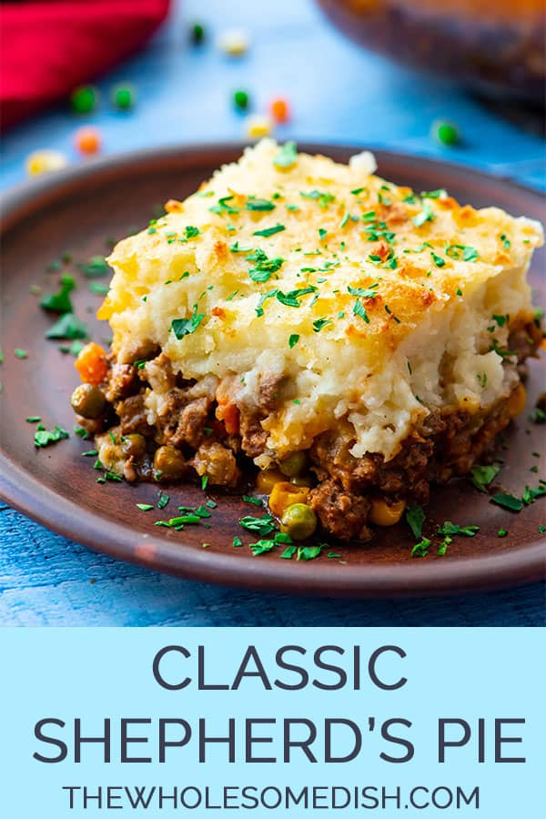

Shepard's Pie

A delicious dish for any day of the year
When you're running low on groceries and need a quick meal
to put together, nothing better to make than Shepard's Pie.
This delicious meal consists of ground beef, some mixed veggies,
topped with deliciously creamy mashed potatoes. It makes great
leftovers for the following day's lunch.
Base
-
ground beef
-
beef broth
-
frozen mixed veggies
-
spices
-
worcester sauce
Mashed Potatoes
-
potatoes
-
sour cream
-
spices
-
butter
-
cream cheese
Steps
-
Preheat oven to 450F
-
Brown the ground beef.
-
Add spices, broth, and W. Sauce.
-
Meanwhile, boil the potatoes.
-
Drain potatoes.
-
Add remaining ingredients to potatoes and mix
until desired consistency.
-
Pour base into oven proof dish and top with potatoes.
-
Bake dish for 20 minutes.
-
Enjoy!